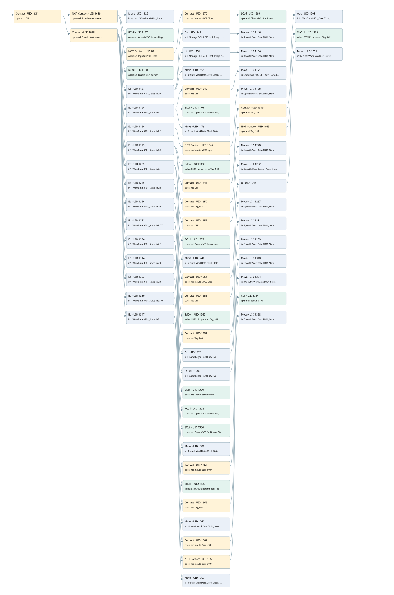

enable burner cleaning sequence
burner control · 검색 색인 순서 15 · 원본 내부 NID 추정 14
백업 PLF 원본의 2694397 바이트 위치에서 복원한 XML. 검색 문서 1868의 객체 키 16102200e710000000000000와 연결했다. 이름 해석 113/113개. 남은 RefId는 상수 또는 미해석 참조다.
연결 구조 다시 그리기
원본 Part/PCon/Wire를 이용한 연결도다. TIA 화면의 래더 배치 또는 실행 결과를 재현한 그림은 아니다. 핀 연결은 아래 표와 원본 XML을 기준으로 읽는다. 노드 위에 마우스를 두면 피연산자 이름을 볼 수 있다.

접점·코일·블록과 피연산자
| Part UID | Gate | Negated 핀 | 연결 피연산자 |
|---|---|---|---|
| 1634 | Contact | operand = ON | |
| 1636 | Contact | operand | operand = Enable start burner(1) |
| 1122 | Move | in = 0; out1 = WorkData.BR01_State | |
| 1127 | RCoil | operand = Open MV03 for washing | |
| 28 | Contact | operand | operand = Inputs.MV03 Close |
| 1670 | Contact | operand = Inputs.MV03 Close | |
| 1669 | SCoil | operand = Close MV03 for Burner Startup | |
| 1130 | RCoil | operand = Enable start burner | |
| 1638 | Contact | operand = Enable start burner(1) | |
| 1137 | Eq | in1 = WorkData.BR01_State; in2 = 0 | |
| 1143 | Ge | in1 = Manage_TC1_2.PID_Ref_Temp; in2 = 500.0 | |
| 1146 | Move | in = 7; out1 = WorkData.BR01_State | |
| 1151 | Lt | in1 = Manage_TC1_2.PID_Ref_Temp; in2 = 500.0 | |
| 1154 | Move | in = 1; out1 = WorkData.BR01_State | |
| 1159 | Move | in = 0; out1 = WorkData.BR01_CleanTime | |
| 1164 | Eq | in1 = WorkData.BR01_State; in2 = 1 | |
| 1640 | Contact | operand = OFF | |
| 1171 | Move | in = Data.Max_PRC_BR1; out1 = Data.Burner_Panel_SetPoint | |
| 1176 | SCoil | operand = Open MV03 for washing | |
| 1179 | Move | in = 2; out1 = WorkData.BR01_State | |
| 1184 | Eq | in1 = WorkData.BR01_State; in2 = 2 | |
| 1642 | Contact | operand | operand = Inputs.MV03 open |
| 1188 | Move | in = 3; out1 = WorkData.BR01_State | |
| 1193 | Eq | in1 = WorkData.BR01_State; in2 = 3 | |
| 1199 | SdCoil | value = S5T#4M; operand = Tag_143 | |
| 1644 | Contact | operand = ON | |
| 1646 | Contact | operand = Tag_142 | |
| 1208 | Add | in1 = WorkData.BR01_CleanTime; in2 = 1; out = WorkData.BR01_CleanTime | |
| 1648 | Contact | operand | operand = Tag_142 |
| 1215 | SdCoil | value = S5T#1S; operand = Tag_142 | |
| 1650 | Contact | operand = Tag_143 | |
| 1220 | Move | in = 4; out1 = WorkData.BR01_State | |
| 1225 | Eq | in1 = WorkData.BR01_State; in2 = 4 | |
| 1652 | Contact | operand = OFF | |
| 1232 | Move | in = 0; out1 = Data.Burner_Panel_SetPoint | |
| 1237 | RCoil | operand = Open MV03 for washing | |
| 1240 | Move | in = 5; out1 = WorkData.BR01_State | |
| 1245 | Eq | in1 = WorkData.BR01_State; in2 = 5 | |
| 1654 | Contact | operand = Inputs.MV03 Close | |
| 1656 | Contact | operand = ON | |
| 1248 | O | ||
| 1251 | Move | in = 6; out1 = WorkData.BR01_State | |
| 1256 | Eq | in1 = WorkData.BR01_State; in2 = 6 | |
| 1262 | SdCoil | value = S5T#1S; operand = Tag_144 | |
| 1658 | Contact | operand = Tag_144 | |
| 1267 | Move | in = 7; out1 = WorkData.BR01_State | |
| 1272 | Eq | in1 = WorkData.BR01_State; in2 = 77 | |
| 1278 | Ge | in1 = Data.Oxigen_RO01; in2 = 60 | |
| 1281 | Move | in = 7; out1 = WorkData.BR01_State | |
| 1286 | Lt | in1 = Data.Oxigen_RO01; in2 = 60 | |
| 1289 | Move | in = 0; out1 = WorkData.BR01_State | |
| 1294 | Eq | in1 = WorkData.BR01_State; in2 = 7 | |
| 1300 | SCoil | operand = Enable start burner | |
| 1303 | RCoil | operand = Open MV03 for washing | |
| 1306 | SCoil | operand = Close MV03 for Burner Startup | |
| 1309 | Move | in = 8; out1 = WorkData.BR01_State | |
| 1314 | Eq | in1 = WorkData.BR01_State; in2 = 8 | |
| 1660 | Contact | operand = Inputs.Burner On | |
| 1318 | Move | in = 9; out1 = WorkData.BR01_State | |
| 1323 | Eq | in1 = WorkData.BR01_State; in2 = 9 | |
| 1329 | SdCoil | value = S5T#30S; operand = Tag_145 | |
| 1662 | Contact | operand = Tag_145 | |
| 1334 | Move | in = 10; out1 = WorkData.BR01_State | |
| 1339 | Eq | in1 = WorkData.BR01_State; in2 = 10 | |
| 1342 | Move | in = 11; out1 = WorkData.BR01_State | |
| 1347 | Eq | in1 = WorkData.BR01_State; in2 = 11 | |
| 1664 | Contact | operand = Inputs.Burner On | |
| 1354 | Coil | operand = Start Burner | |
| 1666 | Contact | operand | operand = Inputs.Burner On |
| 1358 | Move | in = 0; out1 = WorkData.BR01_State | |
| 1363 | Move | in = 0; out1 = WorkData.BR01_CleanTime |
접점 경로를 펼친 조건식
Contact·O/A·비교기의 원본 연결을 읽기 쉽게 펼친 보조 해석이다. POWER는 전원 레일 시작을 뜻한다. 호출 블록·에지·타이머의 내부 동작과 다중 쓰기 순서는 이 표로 실행 검증하지 않았다. 미해석 핀과 RefId는 원문 연결표에서 확인한다.
| UID | 동작 | 대상 | 원본 접점 경로 | 내용 |
|---|---|---|---|---|
| 1122 | Move | WorkData.BR01_State | (ON AND NOT [Enable start burner(1)]) | Move 입력 0 |
| 1127 | RCoil | Open MV03 for washing | (ON AND NOT [Enable start burner(1)]) | 조건 성립 시 Reset |
| 1669 | SCoil | Close MV03 for Burner Startup | (((ON AND NOT [Enable start burner(1)]) AND NOT [Inputs.MV03 Close]) AND Inputs.MV03 Close) | 조건 성립 시 Set |
| 1130 | RCoil | Enable start burner | (ON AND NOT [Enable start burner(1)]) | 조건 성립 시 Reset |
| 1146 | Move | WorkData.BR01_State | (((ON AND Enable start burner(1)) AND [WorkData.BR01_State = 0]) AND [Manage_TC1_2.PID_Ref_Temp >= 500.0]) | Move 입력 7 |
| 1154 | Move | WorkData.BR01_State | (((ON AND Enable start burner(1)) AND [WorkData.BR01_State = 0]) AND [Manage_TC1_2.PID_Ref_Temp < 500.0]) | Move 입력 1 |
| 1159 | Move | WorkData.BR01_CleanTime | ((ON AND Enable start burner(1)) AND [WorkData.BR01_State = 0]) | Move 입력 0 |
| 1171 | Move | Data.Burner_Panel_SetPoint | (((ON AND Enable start burner(1)) AND [WorkData.BR01_State = 1]) AND OFF) | Move 입력 Data.Max_PRC_BR1 |
| 1176 | SCoil | Open MV03 for washing | ((ON AND Enable start burner(1)) AND [WorkData.BR01_State = 1]) | 조건 성립 시 Set |
| 1179 | Move | WorkData.BR01_State | ((ON AND Enable start burner(1)) AND [WorkData.BR01_State = 1]) | Move 입력 2 |
| 1188 | Move | WorkData.BR01_State | (((ON AND Enable start burner(1)) AND [WorkData.BR01_State = 2]) AND NOT [Inputs.MV03 open]) | Move 입력 3 |
| 1199 | SdCoil | Tag_143 | ((ON AND Enable start burner(1)) AND [WorkData.BR01_State = 3]) | 시간 동작 SdCoil; 타이머 의미 추가 확인 / 시간 인자 S5T#4M |
| 1215 | SdCoil | Tag_142 | ((((ON AND Enable start burner(1)) AND [WorkData.BR01_State = 3]) AND ON) AND NOT [Tag_142]) | 시간 동작 SdCoil; 타이머 의미 추가 확인 / 시간 인자 S5T#1S |
| 1220 | Move | WorkData.BR01_State | (((ON AND Enable start burner(1)) AND [WorkData.BR01_State = 3]) AND Tag_143) | Move 입력 4 |
| 1232 | Move | Data.Burner_Panel_SetPoint | (((ON AND Enable start burner(1)) AND [WorkData.BR01_State = 4]) AND OFF) | Move 입력 0 |
| 1237 | RCoil | Open MV03 for washing | ((ON AND Enable start burner(1)) AND [WorkData.BR01_State = 4]) | 조건 성립 시 Reset |
| 1240 | Move | WorkData.BR01_State | ((ON AND Enable start burner(1)) AND [WorkData.BR01_State = 4]) | Move 입력 5 |
| 1251 | Move | WorkData.BR01_State | ((((ON AND Enable start burner(1)) AND [WorkData.BR01_State = 5]) AND Inputs.MV03 Close) OR (((ON AND Enable start burner(1)) AND [WorkData.BR01_State = 5]) AND ON)) | Move 입력 6 |
| 1262 | SdCoil | Tag_144 | ((ON AND Enable start burner(1)) AND [WorkData.BR01_State = 6]) | 시간 동작 SdCoil; 타이머 의미 추가 확인 / 시간 인자 S5T#1S |
| 1267 | Move | WorkData.BR01_State | (((ON AND Enable start burner(1)) AND [WorkData.BR01_State = 6]) AND Tag_144) | Move 입력 7 |
| 1281 | Move | WorkData.BR01_State | (((ON AND Enable start burner(1)) AND [WorkData.BR01_State = 77]) AND [Data.Oxigen_RO01 >= 60]) | Move 입력 7 |
| 1289 | Move | WorkData.BR01_State | (((ON AND Enable start burner(1)) AND [WorkData.BR01_State = 77]) AND [Data.Oxigen_RO01 < 60]) | Move 입력 0 |
| 1300 | SCoil | Enable start burner | ((ON AND Enable start burner(1)) AND [WorkData.BR01_State = 7]) | 조건 성립 시 Set |
| 1303 | RCoil | Open MV03 for washing | ((ON AND Enable start burner(1)) AND [WorkData.BR01_State = 7]) | 조건 성립 시 Reset |
| 1306 | SCoil | Close MV03 for Burner Startup | ((ON AND Enable start burner(1)) AND [WorkData.BR01_State = 7]) | 조건 성립 시 Set |
| 1309 | Move | WorkData.BR01_State | ((ON AND Enable start burner(1)) AND [WorkData.BR01_State = 7]) | Move 입력 8 |
| 1318 | Move | WorkData.BR01_State | (((ON AND Enable start burner(1)) AND [WorkData.BR01_State = 8]) AND Inputs.Burner On) | Move 입력 9 |
| 1329 | SdCoil | Tag_145 | ((ON AND Enable start burner(1)) AND [WorkData.BR01_State = 9]) | 시간 동작 SdCoil; 타이머 의미 추가 확인 / 시간 인자 S5T#30S |
| 1334 | Move | WorkData.BR01_State | (((ON AND Enable start burner(1)) AND [WorkData.BR01_State = 9]) AND Tag_145) | Move 입력 10 |
| 1342 | Move | WorkData.BR01_State | ((ON AND Enable start burner(1)) AND [WorkData.BR01_State = 10]) | Move 입력 11 |
| 1354 | Coil | Start Burner | (((ON AND Enable start burner(1)) AND [WorkData.BR01_State = 11]) AND Inputs.Burner On) | 조건에 따른 Coil 기록 |
| 1358 | Move | WorkData.BR01_State | (((ON AND Enable start burner(1)) AND [WorkData.BR01_State = 11]) AND NOT [Inputs.Burner On]) | Move 입력 0 |
| 1363 | Move | WorkData.BR01_CleanTime | ((ON AND Enable start burner(1)) AND [WorkData.BR01_State = 11]) | Move 입력 0 |
원본 배선 연결
| Wire UID | 동일 Wire 연결 끝점 |
|---|---|
| 1668 | Powerrail {} ↔ Part 1634.in |
| 1476 | ORef 1366 (ON) ↔ Part 1634.operand |
| 1635 | Part 1634.out ↔ Part 1636.in ↔ Part 1638.in |
| 1477 | ORef 1367 (Enable start burner(1)) ↔ Part 1636.operand |
| 1637 | Part 1636.out ↔ Part 1122.en ↔ Part 1127.in ↔ Part 28.in ↔ Part 1130.in |
| 1478 | ORef 1368 (0) ↔ Part 1122.in |
| 1479 | Part 1122.out1 ↔ ORef 1369 (WorkData.BR01_State) |
| 1480 | ORef 1370 (Open MV03 for washing) ↔ Part 1127.operand |
| 37 | ORef 38 (Inputs.MV03 Close) ↔ Part 28.operand |
| 29 | Part 28.out ↔ Part 1670.in |
| 33 | ORef 34 (Inputs.MV03 Close) ↔ Part 1670.operand |
| 30 | Part 1670.out ↔ Part 1669.in |
| 25 | ORef 26 (Close MV03 for Burner Startup) ↔ Part 1669.operand |
| 1481 | ORef 1371 (Enable start burner) ↔ Part 1130.operand |
| 1483 | ORef 1372 (Enable start burner(1)) ↔ Part 1638.operand |
| 1639 | Part 1638.out ↔ Part 1137.pre ↔ Part 1164.pre ↔ Part 1184.pre ↔ Part 1193.pre ↔ Part 1225.pre ↔ Part 1245.pre ↔ Part 1256.pre ↔ Part 1272.pre ↔ Part 1294.pre ↔ Part 1314.pre ↔ Part 1323.pre ↔ Part 1339.pre ↔ Part 1347.pre |
| 1484 | ORef 1373 (WorkData.BR01_State) ↔ Part 1137.in1 |
| 1485 | ORef 1374 (0) ↔ Part 1137.in2 |
| 1486 | Part 1137.out ↔ Part 1143.pre ↔ Part 1151.pre ↔ Part 1159.en |
| 1487 | ORef 1375 (Manage_TC1_2.PID_Ref_Temp) ↔ Part 1143.in1 |
| 1488 | ORef 1376 (500.0) ↔ Part 1143.in2 |
| 1489 | Part 1143.out ↔ Part 1146.en |
| 1491 | ORef 1377 (7) ↔ Part 1146.in |
| 1492 | Part 1146.out1 ↔ ORef 1378 (WorkData.BR01_State) |
| 1493 | ORef 1379 (Manage_TC1_2.PID_Ref_Temp) ↔ Part 1151.in1 |
| 1494 | ORef 1380 (500.0) ↔ Part 1151.in2 |
| 1495 | Part 1151.out ↔ Part 1154.en |
| 1497 | ORef 1381 (1) ↔ Part 1154.in |
| 1498 | Part 1154.out1 ↔ ORef 1382 (WorkData.BR01_State) |
| 1499 | ORef 1383 (0) ↔ Part 1159.in |
| 1500 | Part 1159.out1 ↔ ORef 1384 (WorkData.BR01_CleanTime) |
| 1502 | ORef 1385 (WorkData.BR01_State) ↔ Part 1164.in1 |
| 1503 | ORef 1386 (1) ↔ Part 1164.in2 |
| 1504 | Part 1164.out ↔ Part 1640.in ↔ Part 1176.in ↔ Part 1179.en |
| 1505 | ORef 1387 (OFF) ↔ Part 1640.operand |
| 1641 | Part 1640.out ↔ Part 1171.en |
| 1507 | ORef 1388 (Data.Max_PRC_BR1) ↔ Part 1171.in |
| 1508 | Part 1171.out1 ↔ ORef 1389 (Data.Burner_Panel_SetPoint) |
| 1509 | ORef 1390 (Open MV03 for washing) ↔ Part 1176.operand |
| 1510 | ORef 1391 (2) ↔ Part 1179.in |
| 1511 | Part 1179.out1 ↔ ORef 1392 (WorkData.BR01_State) |
| 1513 | ORef 1393 (WorkData.BR01_State) ↔ Part 1184.in1 |
| 1514 | ORef 1394 (2) ↔ Part 1184.in2 |
| 21 | Part 1184.out ↔ Part 1642.in |
| 23 | ORef 24 (Inputs.MV03 open) ↔ Part 1642.operand |
| 22 | Part 1642.out ↔ Part 1188.en |
| 1518 | ORef 1396 (3) ↔ Part 1188.in |
| 1519 | Part 1188.out1 ↔ ORef 1397 (WorkData.BR01_State) |
| 1520 | ORef 1398 (WorkData.BR01_State) ↔ Part 1193.in1 |
| 1521 | ORef 1399 (3) ↔ Part 1193.in2 |
| 1522 | Part 1193.out ↔ Part 1199.in ↔ Part 1644.in ↔ Part 1650.in |
| 1523 | ORef 1400 (S5T#4M) ↔ Part 1199.value |
| 1524 | ORef 1401 (Tag_143) ↔ Part 1199.operand |
| 1525 | ORef 1402 (ON) ↔ Part 1644.operand |
| 1645 | Part 1644.out ↔ Part 1646.in ↔ Part 1648.in |
| 1526 | ORef 1403 (Tag_142) ↔ Part 1646.operand |
| 1647 | Part 1646.out ↔ Part 1208.en |
| 1528 | ORef 1404 (WorkData.BR01_CleanTime) ↔ Part 1208.in1 |
| 1529 | ORef 1405 (1) ↔ Part 1208.in2 |
| 1530 | Part 1208.out ↔ ORef 1406 (WorkData.BR01_CleanTime) |
| 1532 | ORef 1408 (Tag_142) ↔ Part 1648.operand |
| 1649 | Part 1648.out ↔ Part 1215.in |
| 1531 | ORef 1407 (S5T#1S) ↔ Part 1215.value |
| 1534 | ORef 1409 (Tag_142) ↔ Part 1215.operand |
| 1536 | ORef 1410 (Tag_143) ↔ Part 1650.operand |
| 1651 | Part 1650.out ↔ Part 1220.en |
| 1538 | ORef 1411 (4) ↔ Part 1220.in |
| 1539 | Part 1220.out1 ↔ ORef 1412 (WorkData.BR01_State) |
| 1541 | ORef 1413 (WorkData.BR01_State) ↔ Part 1225.in1 |
| 1542 | ORef 1414 (4) ↔ Part 1225.in2 |
| 1543 | Part 1225.out ↔ Part 1652.in ↔ Part 1237.in ↔ Part 1240.en |
| 1544 | ORef 1415 (OFF) ↔ Part 1652.operand |
| 1653 | Part 1652.out ↔ Part 1232.en |
| 1546 | ORef 1416 (0) ↔ Part 1232.in |
| 1547 | Part 1232.out1 ↔ ORef 1417 (Data.Burner_Panel_SetPoint) |
| 1548 | ORef 1418 (Open MV03 for washing) ↔ Part 1237.operand |
| 1549 | ORef 1419 (5) ↔ Part 1240.in |
| 1550 | Part 1240.out1 ↔ ORef 1420 (WorkData.BR01_State) |
| 1552 | ORef 1421 (WorkData.BR01_State) ↔ Part 1245.in1 |
| 1553 | ORef 1422 (5) ↔ Part 1245.in2 |
| 1554 | Part 1245.out ↔ Part 1654.in ↔ Part 1656.in |
| 1555 | ORef 1423 (Inputs.MV03 Close) ↔ Part 1654.operand |
| 1655 | Part 1654.out ↔ Part 1248.in1 |
| 1556 | ORef 1424 (ON) ↔ Part 1656.operand |
| 1657 | Part 1656.out ↔ Part 1248.in2 |
| 1557 | Part 1248.out ↔ Part 1251.en |
| 1559 | ORef 1425 (6) ↔ Part 1251.in |
| 1560 | Part 1251.out1 ↔ ORef 1426 (WorkData.BR01_State) |
| 1561 | ORef 1427 (WorkData.BR01_State) ↔ Part 1256.in1 |
| 1562 | ORef 1428 (6) ↔ Part 1256.in2 |
| 1563 | Part 1256.out ↔ Part 1262.in ↔ Part 1658.in |
| 1564 | ORef 1429 (S5T#1S) ↔ Part 1262.value |
| 1565 | ORef 1430 (Tag_144) ↔ Part 1262.operand |
| 1566 | ORef 1431 (Tag_144) ↔ Part 1658.operand |
| 1659 | Part 1658.out ↔ Part 1267.en |
| 1568 | ORef 1432 (7) ↔ Part 1267.in |
| 1569 | Part 1267.out1 ↔ ORef 1433 (WorkData.BR01_State) |
| 1571 | ORef 1434 (WorkData.BR01_State) ↔ Part 1272.in1 |
| 1572 | ORef 1435 (77) ↔ Part 1272.in2 |
| 1573 | Part 1272.out ↔ Part 1278.pre ↔ Part 1286.pre |
| 1574 | ORef 1436 (Data.Oxigen_RO01) ↔ Part 1278.in1 |
| 1575 | ORef 1437 (60) ↔ Part 1278.in2 |
| 1576 | Part 1278.out ↔ Part 1281.en |
| 1578 | ORef 1438 (7) ↔ Part 1281.in |
| 1579 | Part 1281.out1 ↔ ORef 1439 (WorkData.BR01_State) |
| 1580 | ORef 1440 (Data.Oxigen_RO01) ↔ Part 1286.in1 |
| 1581 | ORef 1441 (60) ↔ Part 1286.in2 |
| 1582 | Part 1286.out ↔ Part 1289.en |
| 1584 | ORef 1442 (0) ↔ Part 1289.in |
| 1585 | Part 1289.out1 ↔ ORef 1443 (WorkData.BR01_State) |
| 1587 | ORef 1444 (WorkData.BR01_State) ↔ Part 1294.in1 |
| 1588 | ORef 1445 (7) ↔ Part 1294.in2 |
| 1589 | Part 1294.out ↔ Part 1300.in ↔ Part 1303.in ↔ Part 1306.in ↔ Part 1309.en |
| 1590 | ORef 1446 (Enable start burner) ↔ Part 1300.operand |
| 1591 | ORef 1447 (Open MV03 for washing) ↔ Part 1303.operand |
| 1592 | ORef 1448 (Close MV03 for Burner Startup) ↔ Part 1306.operand |
| 1593 | ORef 1449 (8) ↔ Part 1309.in |
| 1594 | Part 1309.out1 ↔ ORef 1450 (WorkData.BR01_State) |
| 1596 | ORef 1451 (WorkData.BR01_State) ↔ Part 1314.in1 |
| 1597 | ORef 1452 (8) ↔ Part 1314.in2 |
| 31 | Part 1314.out ↔ Part 1660.in |
| 1599 | ORef 1453 (Inputs.Burner On) ↔ Part 1660.operand |
| 32 | Part 1660.out ↔ Part 1318.en |
| 1601 | ORef 1454 (9) ↔ Part 1318.in |
| 1602 | Part 1318.out1 ↔ ORef 1455 (WorkData.BR01_State) |
| 1603 | ORef 1456 (WorkData.BR01_State) ↔ Part 1323.in1 |
| 1604 | ORef 1457 (9) ↔ Part 1323.in2 |
| 1605 | Part 1323.out ↔ Part 1329.in ↔ Part 1662.in |
| 1606 | ORef 1458 (S5T#30S) ↔ Part 1329.value |
| 1607 | ORef 1459 (Tag_145) ↔ Part 1329.operand |
| 1608 | ORef 1460 (Tag_145) ↔ Part 1662.operand |
| 1663 | Part 1662.out ↔ Part 1334.en |
| 1610 | ORef 1461 (10) ↔ Part 1334.in |
| 1611 | Part 1334.out1 ↔ ORef 1462 (WorkData.BR01_State) |
| 1613 | ORef 1463 (WorkData.BR01_State) ↔ Part 1339.in1 |
| 1614 | ORef 1464 (10) ↔ Part 1339.in2 |
| 1615 | Part 1339.out ↔ Part 1342.en |
| 1617 | ORef 1465 (11) ↔ Part 1342.in |
| 1618 | Part 1342.out1 ↔ ORef 1466 (WorkData.BR01_State) |
| 1619 | ORef 1467 (WorkData.BR01_State) ↔ Part 1347.in1 |
| 1620 | ORef 1468 (11) ↔ Part 1347.in2 |
| 1621 | Part 1347.out ↔ Part 1664.in ↔ Part 1666.in ↔ Part 1363.en |
| 1622 | ORef 1469 (Inputs.Burner On) ↔ Part 1664.operand |
| 1665 | Part 1664.out ↔ Part 1354.in |
| 1624 | ORef 1470 (Start Burner) ↔ Part 1354.operand |
| 1625 | ORef 1471 (Inputs.Burner On) ↔ Part 1666.operand |
| 1667 | Part 1666.out ↔ Part 1358.en |
| 1627 | ORef 1472 (0) ↔ Part 1358.in |
| 1628 | Part 1358.out1 ↔ ORef 1473 (WorkData.BR01_State) |
| 1629 | ORef 1474 (0) ↔ Part 1363.in |
| 1630 | Part 1363.out1 ↔ ORef 1475 (WorkData.BR01_CleanTime) |
식별자 해석 근거 113개
| ORef UID | RefId | 이름 | IdentXmlPart 파일 | 해석 방법 |
|---|---|---|---|---|
| 1366 | 1 | ON | 0582-IdentXmlPart.xml | UID/RID + search-text + NID agreement |
| 1367 | 92 | Enable start burner(1) | 0582-IdentXmlPart.xml | UID/RID + search-text + NID agreement |
| 1368 | 52 | 0 | 0586-IdentXmlPart.xml | literal candidate: UID/RID/NID + nearby named declarations + search-text agreement |
| 1369 | 100 | WorkData.BR01_State | 0585-IdentXmlPart.xml | UID/RID + search-text + NID agreement |
| 1370 | 101 | Open MV03 for washing | 0582-IdentXmlPart.xml | UID/RID + search-text + NID agreement |
| 38 | 233 | Inputs.MV03 Close | 0585-IdentXmlPart.xml | UID/RID + search-text + NID agreement |
| 34 | 233 | Inputs.MV03 Close | 0585-IdentXmlPart.xml | UID/RID + search-text + NID agreement |
| 26 | 238 | Close MV03 for Burner Startup | 0582-IdentXmlPart.xml | UID/RID + search-text + NID agreement |
| 1371 | 93 | Enable start burner | 0582-IdentXmlPart.xml | UID/RID + search-text + NID agreement |
| 1372 | 92 | Enable start burner(1) | 0582-IdentXmlPart.xml | UID/RID + search-text + NID agreement |
| 1373 | 100 | WorkData.BR01_State | 0585-IdentXmlPart.xml | UID/RID + search-text + NID agreement |
| 1374 | 52 | 0 | 0586-IdentXmlPart.xml | literal candidate: UID/RID/NID + nearby named declarations + search-text agreement |
| 1375 | 242 | Manage_TC1_2.PID_Ref_Temp | 0585-IdentXmlPart.xml | UID/RID + search-text + NID agreement |
| 1376 | 243 | 500.0 | 0586-IdentXmlPart.xml | literal candidate: UID/RID/NID + nearby named declarations + search-text agreement |
| 1377 | 104 | 7 | 0586-IdentXmlPart.xml | literal candidate: UID/RID/NID + nearby named declarations + search-text agreement |
| 1378 | 100 | WorkData.BR01_State | 0585-IdentXmlPart.xml | UID/RID + search-text + NID agreement |
| 1379 | 242 | Manage_TC1_2.PID_Ref_Temp | 0585-IdentXmlPart.xml | UID/RID + search-text + NID agreement |
| 1380 | 243 | 500.0 | 0586-IdentXmlPart.xml | literal candidate: UID/RID/NID + nearby named declarations + search-text agreement |
| 1381 | 49 | 1 | 0586-IdentXmlPart.xml | literal candidate: UID/RID/NID + nearby named declarations + search-text agreement |
| 1382 | 100 | WorkData.BR01_State | 0585-IdentXmlPart.xml | UID/RID + search-text + NID agreement |
| 1383 | 52 | 0 | 0586-IdentXmlPart.xml | literal candidate: UID/RID/NID + nearby named declarations + search-text agreement |
| 1384 | 97 | WorkData.BR01_CleanTime | 0585-IdentXmlPart.xml | UID/RID + search-text + NID agreement |
| 1385 | 100 | WorkData.BR01_State | 0585-IdentXmlPart.xml | UID/RID + search-text + NID agreement |
| 1386 | 49 | 1 | 0586-IdentXmlPart.xml | literal candidate: UID/RID/NID + nearby named declarations + search-text agreement |
| 1387 | 80 | OFF | 0582-IdentXmlPart.xml | UID/RID + search-text + NID agreement |
| 1388 | 108 | Data.Max_PRC_BR1 | 0585-IdentXmlPart.xml | UID/RID + search-text + NID agreement |
| 1389 | 71 | Data.Burner_Panel_SetPoint | 0585-IdentXmlPart.xml | UID/RID + search-text + NID agreement |
| 1390 | 101 | Open MV03 for washing | 0582-IdentXmlPart.xml | UID/RID + search-text + NID agreement |
| 1391 | 110 | 2 | 0586-IdentXmlPart.xml | literal candidate: UID/RID/NID + nearby named declarations + search-text agreement |
| 1392 | 100 | WorkData.BR01_State | 0585-IdentXmlPart.xml | UID/RID + search-text + NID agreement |
| 1393 | 100 | WorkData.BR01_State | 0585-IdentXmlPart.xml | UID/RID + search-text + NID agreement |
| 1394 | 110 | 2 | 0586-IdentXmlPart.xml | literal candidate: UID/RID/NID + nearby named declarations + search-text agreement |
| 24 | 231 | Inputs.MV03 open | 0585-IdentXmlPart.xml | UID/RID + search-text + NID agreement |
| 1396 | 113 | 3 | 0586-IdentXmlPart.xml | literal candidate: UID/RID/NID + nearby named declarations + search-text agreement |
| 1397 | 100 | WorkData.BR01_State | 0585-IdentXmlPart.xml | UID/RID + search-text + NID agreement |
| 1398 | 100 | WorkData.BR01_State | 0585-IdentXmlPart.xml | UID/RID + search-text + NID agreement |
| 1399 | 113 | 3 | 0586-IdentXmlPart.xml | literal candidate: UID/RID/NID + nearby named declarations + search-text agreement |
| 1401 | 115 | Tag_143 | 0582-IdentXmlPart.xml | UID/RID + search-text + NID agreement |
| 1400 | 114 | S5T#4M | 0586-IdentXmlPart.xml | literal candidate: UID/RID/NID + nearby named declarations + search-text agreement |
| 1402 | 1 | ON | 0582-IdentXmlPart.xml | UID/RID + search-text + NID agreement |
| 1403 | 95 | Tag_142 | 0582-IdentXmlPart.xml | UID/RID + search-text + NID agreement |
| 1404 | 97 | WorkData.BR01_CleanTime | 0585-IdentXmlPart.xml | UID/RID + search-text + NID agreement |
| 1405 | 49 | 1 | 0586-IdentXmlPart.xml | literal candidate: UID/RID/NID + nearby named declarations + search-text agreement |
| 1406 | 97 | WorkData.BR01_CleanTime | 0585-IdentXmlPart.xml | UID/RID + search-text + NID agreement |
| 1408 | 95 | Tag_142 | 0582-IdentXmlPart.xml | UID/RID + search-text + NID agreement |
| 1409 | 95 | Tag_142 | 0582-IdentXmlPart.xml | UID/RID + search-text + NID agreement |
| 1407 | 98 | S5T#1S | 0586-IdentXmlPart.xml | literal candidate: UID/RID/NID + nearby named declarations + search-text agreement |
| 1410 | 115 | Tag_143 | 0582-IdentXmlPart.xml | UID/RID + search-text + NID agreement |
| 1411 | 119 | 4 | 0586-IdentXmlPart.xml | literal candidate: UID/RID/NID + nearby named declarations + search-text agreement |
| 1412 | 100 | WorkData.BR01_State | 0585-IdentXmlPart.xml | UID/RID + search-text + NID agreement |
| 1413 | 100 | WorkData.BR01_State | 0585-IdentXmlPart.xml | UID/RID + search-text + NID agreement |
| 1414 | 119 | 4 | 0586-IdentXmlPart.xml | literal candidate: UID/RID/NID + nearby named declarations + search-text agreement |
| 1415 | 80 | OFF | 0582-IdentXmlPart.xml | UID/RID + search-text + NID agreement |
| 1416 | 52 | 0 | 0586-IdentXmlPart.xml | literal candidate: UID/RID/NID + nearby named declarations + search-text agreement |
| 1417 | 71 | Data.Burner_Panel_SetPoint | 0585-IdentXmlPart.xml | UID/RID + search-text + NID agreement |
| 1418 | 101 | Open MV03 for washing | 0582-IdentXmlPart.xml | UID/RID + search-text + NID agreement |
| 1419 | 122 | 5 | 0586-IdentXmlPart.xml | literal candidate: UID/RID/NID + nearby named declarations + search-text agreement |
| 1420 | 100 | WorkData.BR01_State | 0585-IdentXmlPart.xml | UID/RID + search-text + NID agreement |
| 1421 | 100 | WorkData.BR01_State | 0585-IdentXmlPart.xml | UID/RID + search-text + NID agreement |
| 1422 | 122 | 5 | 0586-IdentXmlPart.xml | literal candidate: UID/RID/NID + nearby named declarations + search-text agreement |
| 1423 | 233 | Inputs.MV03 Close | 0585-IdentXmlPart.xml | UID/RID + search-text + NID agreement |
| 1424 | 1 | ON | 0582-IdentXmlPart.xml | UID/RID + search-text + NID agreement |
| 1425 | 125 | 6 | 0586-IdentXmlPart.xml | literal candidate: UID/RID/NID + nearby named declarations + search-text agreement |
| 1426 | 100 | WorkData.BR01_State | 0585-IdentXmlPart.xml | UID/RID + search-text + NID agreement |
| 1427 | 100 | WorkData.BR01_State | 0585-IdentXmlPart.xml | UID/RID + search-text + NID agreement |
| 1428 | 125 | 6 | 0586-IdentXmlPart.xml | literal candidate: UID/RID/NID + nearby named declarations + search-text agreement |
| 1430 | 126 | Tag_144 | 0582-IdentXmlPart.xml | UID/RID + search-text + NID agreement |
| 1429 | 98 | S5T#1S | 0586-IdentXmlPart.xml | literal candidate: UID/RID/NID + nearby named declarations + search-text agreement |
| 1431 | 126 | Tag_144 | 0582-IdentXmlPart.xml | UID/RID + search-text + NID agreement |
| 1432 | 104 | 7 | 0586-IdentXmlPart.xml | literal candidate: UID/RID/NID + nearby named declarations + search-text agreement |
| 1433 | 100 | WorkData.BR01_State | 0585-IdentXmlPart.xml | UID/RID + search-text + NID agreement |
| 1434 | 100 | WorkData.BR01_State | 0585-IdentXmlPart.xml | UID/RID + search-text + NID agreement |
| 1435 | 128 | 77 | 0586-IdentXmlPart.xml | literal candidate: UID/RID/NID + nearby named declarations + search-text agreement |
| 1436 | 129 | Data.Oxigen_RO01 | 0585-IdentXmlPart.xml | UID/RID + search-text + NID agreement |
| 1437 | 130 | 60 | 0586-IdentXmlPart.xml | literal candidate: UID/RID/NID + nearby named declarations + search-text agreement |
| 1438 | 104 | 7 | 0586-IdentXmlPart.xml | literal candidate: UID/RID/NID + nearby named declarations + search-text agreement |
| 1439 | 100 | WorkData.BR01_State | 0585-IdentXmlPart.xml | UID/RID + search-text + NID agreement |
| 1440 | 129 | Data.Oxigen_RO01 | 0585-IdentXmlPart.xml | UID/RID + search-text + NID agreement |
| 1441 | 130 | 60 | 0586-IdentXmlPart.xml | literal candidate: UID/RID/NID + nearby named declarations + search-text agreement |
| 1442 | 52 | 0 | 0586-IdentXmlPart.xml | literal candidate: UID/RID/NID + nearby named declarations + search-text agreement |
| 1443 | 100 | WorkData.BR01_State | 0585-IdentXmlPart.xml | UID/RID + search-text + NID agreement |
| 1444 | 100 | WorkData.BR01_State | 0585-IdentXmlPart.xml | UID/RID + search-text + NID agreement |
| 1445 | 104 | 7 | 0586-IdentXmlPart.xml | literal candidate: UID/RID/NID + nearby named declarations + search-text agreement |
| 1446 | 93 | Enable start burner | 0582-IdentXmlPart.xml | UID/RID + search-text + NID agreement |
| 1447 | 101 | Open MV03 for washing | 0582-IdentXmlPart.xml | UID/RID + search-text + NID agreement |
| 1448 | 238 | Close MV03 for Burner Startup | 0582-IdentXmlPart.xml | UID/RID + search-text + NID agreement |
| 1449 | 135 | 8 | 0586-IdentXmlPart.xml | literal candidate: UID/RID/NID + nearby named declarations + search-text agreement |
| 1450 | 100 | WorkData.BR01_State | 0585-IdentXmlPart.xml | UID/RID + search-text + NID agreement |
| 1451 | 100 | WorkData.BR01_State | 0585-IdentXmlPart.xml | UID/RID + search-text + NID agreement |
| 1452 | 135 | 8 | 0586-IdentXmlPart.xml | literal candidate: UID/RID/NID + nearby named declarations + search-text agreement |
| 1453 | 227 | Inputs.Burner On | 0585-IdentXmlPart.xml | UID/RID + search-text + NID agreement |
| 1454 | 137 | 9 | 0586-IdentXmlPart.xml | literal candidate: UID/RID/NID + nearby named declarations + search-text agreement |
| 1455 | 100 | WorkData.BR01_State | 0585-IdentXmlPart.xml | UID/RID + search-text + NID agreement |
| 1456 | 100 | WorkData.BR01_State | 0585-IdentXmlPart.xml | UID/RID + search-text + NID agreement |
| 1457 | 137 | 9 | 0586-IdentXmlPart.xml | literal candidate: UID/RID/NID + nearby named declarations + search-text agreement |
| 1459 | 139 | Tag_145 | 0582-IdentXmlPart.xml | UID/RID + search-text + NID agreement |
| 1458 | 138 | S5T#30S | 0586-IdentXmlPart.xml | literal candidate: UID/RID/NID + nearby named declarations + search-text agreement |
| 1460 | 139 | Tag_145 | 0582-IdentXmlPart.xml | UID/RID + search-text + NID agreement |
| 1461 | 141 | 10 | 0586-IdentXmlPart.xml | literal candidate: UID/RID/NID + nearby named declarations + search-text agreement |
| 1462 | 100 | WorkData.BR01_State | 0585-IdentXmlPart.xml | UID/RID + search-text + NID agreement |
| 1463 | 100 | WorkData.BR01_State | 0585-IdentXmlPart.xml | UID/RID + search-text + NID agreement |
| 1464 | 141 | 10 | 0586-IdentXmlPart.xml | literal candidate: UID/RID/NID + nearby named declarations + search-text agreement |
| 1465 | 143 | 11 | 0586-IdentXmlPart.xml | literal candidate: UID/RID/NID + nearby named declarations + search-text agreement |
| 1466 | 100 | WorkData.BR01_State | 0585-IdentXmlPart.xml | UID/RID + search-text + NID agreement |
| 1467 | 100 | WorkData.BR01_State | 0585-IdentXmlPart.xml | UID/RID + search-text + NID agreement |
| 1468 | 143 | 11 | 0586-IdentXmlPart.xml | literal candidate: UID/RID/NID + nearby named declarations + search-text agreement |
| 1469 | 227 | Inputs.Burner On | 0585-IdentXmlPart.xml | UID/RID + search-text + NID agreement |
| 1470 | 144 | Start Burner | 0582-IdentXmlPart.xml | UID/RID + search-text + NID agreement |
| 1471 | 227 | Inputs.Burner On | 0585-IdentXmlPart.xml | UID/RID + search-text + NID agreement |
| 1472 | 52 | 0 | 0586-IdentXmlPart.xml | literal candidate: UID/RID/NID + nearby named declarations + search-text agreement |
| 1473 | 100 | WorkData.BR01_State | 0585-IdentXmlPart.xml | UID/RID + search-text + NID agreement |
| 1474 | 52 | 0 | 0586-IdentXmlPart.xml | literal candidate: UID/RID/NID + nearby named declarations + search-text agreement |
| 1475 | 97 | WorkData.BR01_CleanTime | 0585-IdentXmlPart.xml | UID/RID + search-text + NID agreement |
검색 코드 보조 자료
참조 명칭을 찾기 위한 자료이며 실행 순서나 AND/OR 관계는 위 연결표로 확인한다.
"on" "enable start burner(1)" move 0 "enable start burner(1)" "workdata".br01_state 0 "manage_tc1_2".pid_ref_temp 500.0 move 7 "workdata".br01_state 1 "off" move "data".max_prc_br1 "open mv03 for washing" move 2 "workdata".br01_state "data".burner_panel_setpoint "workdata".br01_state 2 "inputs"."mv03 open" move 3 "workdata".br01_state "workdata".br01_state 3 "tag_143" s5t#4m "on" "tag_142" add "workdata".br01_cleantime 1 "tag_142" "tag_142" s5t#1s "workdata".br01_cleantime "tag_143" move 4 "workdata".br01_state "workdata".br01_state 4 "off" move 0 "open mv03 for washing" move 5 "workdata".br01_state "data".burner_panel_setpoint "workdata".br01_state 5 "inputs"."mv03 close" move 6 "on" "workdata".br01_state "workdata".br01_state 6 "tag_144" s5t#1s "tag_144" move 7 "workdata".br01_state "workdata".br01_state 77 "data".oxigen_ro01 60 move 7 "data".oxigen_ro01 60 move 0 "workdata".br01_state "workdata".br01_state "workdata".br01_state 7 "enable start burner" "open mv03 for washing" "close mv03 for burner startup" move 8 "workdata".br01_state "workdata".br01_state 8 "inputs"."burner on" move 9 "workdata".br01_state "workdata".br01_state 9 "tag_145" s5t#30s "tag_145" move 10 "workdata".br01_state "workdata".br01_state 10 move 11 "workdata".br01_state "workdata".br01_state 11 "inputs"."burner on" "start burner" "inputs"."burner on" move 0 "workdata".br01_state move 0 "workdata".br01_cleantime "manage_tc1_2".pid_ref_temp 500.0 move 1 "workdata".br01_state move 0 "workdata".br01_cleantime "workdata".br01_state "open mv03 for washing" "inputs"."mv03 close" "inputs"."mv03 close" "close mv03 for burner startup" "enable start burner" "workdata".br01_state